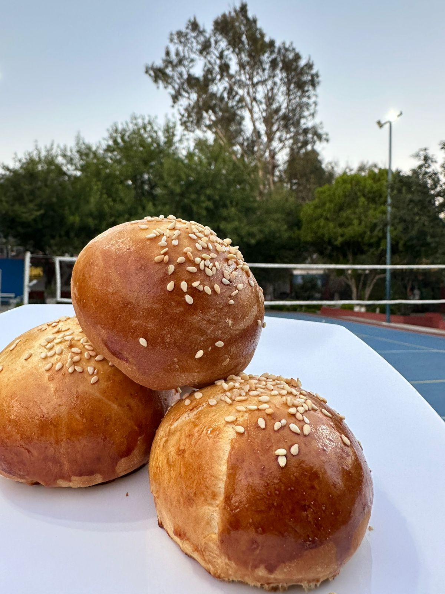

Pan Brioche

El Pan Brioche es un tipo de pan frances rico y suve, conocido por su textura esponjosa y sabor ligeramente dulce.
Ingredientes:
- 500 gr de harina de trigo.
- 10 gr de sal.
- 15 gr de azucar.
- 15 gr de levadura fresca o 7 gr de levadura seca.
- 250 ml de leche tibia
- 2 hevos.
- 120 gr de mantequilla derretida.
Costo:
$6.40